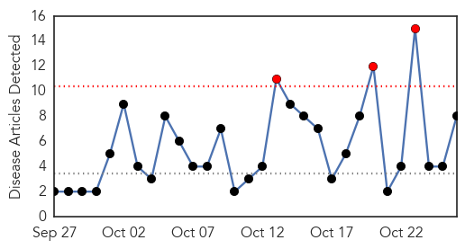
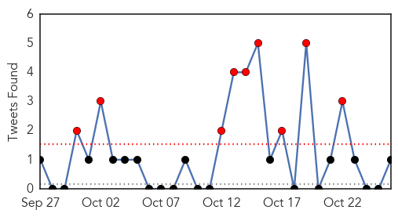

30 Day Trends
Web: 3 alerts, 0 warnings
Twitter: 9 alerts, 0 warnings
Top Articles:
- 0.961
- Syrian cholera outbreak could cause “international threat”
- 0.905
- Cholera outbreak in Uganda district kills six people
- 0.863
- Winnie Byanyima Shifts Base to Nairobi
- 0.863
- Museveni Urges Ugandans to Take Pride in Paying Taxes
- 0.863
- Financiers to Discuss Benefits of Investing in Africa
- 0.863
- FEATURE: Blogging on a Steady Rise in Uganda
- 0.863
- Africa, India Boost Trade Ties at Summit
- 0.641
- Iraq: Iraq: 3RP Monthly Update - September 2015: WASH
Top Tweets:
- 0.504
- RT: Unicef: Cholera outbreak in the West and Central Africa: Regional Update 2015 - Week 40 https://t.co/EoNjviy4Wo
Web/News Articles
Tweets
Article Locations